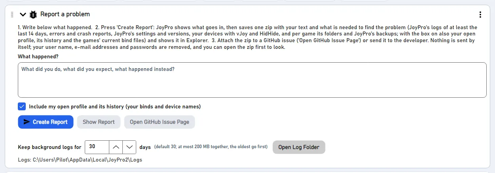

#Stránka projektu
TlačítkopopsánoPopisek Otevře oficiální stránku vydání komponenty ve vašem prohlížeči
Na kartě součásti: otevře ve vašem prohlížeči oficiální stránku vydání součásti, kde ji její vlastní projekt popisuje a nabízí ke stažení.
Stránka Nastavení obsahuje každé nastavení JoyPro ve 25 sekcích, které se otvírají a zavírají. Pole hledání najde nastavení podle slova („oznamovací oblast“, „aktualizace“, „fotky“), karty nahoře skočí na sekci a sekce si můžete seřadit po svém. Každé nastavení se uloží hned a přežije restart; tlačítko Uložit neexistuje.


První spuštění otevře jen sekci Hry; vše ostatní je o kliknutí dál. Většina lidí kdy potřebuje jen Hry, Vzhled, Jazyk a O JoyPro a aktualizace.
| Oddíl | Co tam nastavíte |
|---|---|
| Hry | Které hry máte, propojené složky, sledování konfigurace her, zařízení vJoy, které JoyPro používá |
| Přiřazení | Sledování vstupu, nahrávání tlačítek, která zůstávají stisknutá |
| Prohlídky | Uvítání, režim nápovědy (F1) a každá prohlídka, ke spuštění znovu |
| Spuštění | Při spuštění otevřít poslední profil |
| Stránky na spodní liště | Skrýt stránky, změnit jejich pořadí |
| Jazyk | Jazyk JoyPro |
| Vzhled | Světlý, tmavý nebo vaše vlastní barvy, velikost textu, měřítko rozhraní, editor motivů |
| Běh na pozadí | Pomocník v oznamovací oblasti, který dál sleduje vaše hry |
| Potvrzení | Otázky, které JoyPro klade před změnou |
| O JoyPro a aktualizace | Verze, stránka projektu, aktualizace |
| Soukromí | Fotky výrobců, balíčky obrázků, obálky her |
| Statistiky používání | Stránka Statistiky, pořadí vašich nejpoužívanějších letounů |
| Záznam telemetrie | Zaznamenávejte své lety jako Tacview |
| Výkresy | Jak JoyPro kreslí vaše zařízení; obnovení vašich změn rozvržení |
| Nahlásit problém | Jeden zip se vším, co je potřeba k nalezení problému |
| Místní AI | Volitelný jazykový model |
| Komponenty | vJoy, HidHide, ViGEmBus a další volitelné programy |
| Zařízení | Vaše zařízení, jejich jména, nahrazení nebo odebrání zařízení |
| Seznamy příkazů (DB) a cesty her | Informace pro experty |
| DCS: výchozí přiřazení | Vlastní výchozí přiřazení DCS v instalaci DCS |
| Seznamy příkazů DCS, Star Citizen a IL-2 | Aktualizace seznamů příkazů pro experty |
| Nastavení zpětné vazby síly her | Vlastní volby zpětné vazby síly ve hrách |
| Zpětná vazba síly v DCS: prohození a inverze | Směr zpětné vazby síly v DCS pro každé zařízení |


Jedna karta pro každou hru, kterou JoyPro podporuje a vy ji máte, s její obálkou, „Nainstalováno“ nebo „Není nainstalováno“, kde je a kde má své ovládání.
gui.vromfs.bin a lang.vromfs.bin pro každou akci letadel a vrtulníků. Vypnuto: jen vlastní seznam JoyPro s akcemi War Thunder, které zná.Tady se ve hře nic nemění. Propojená složka určuje, kde import a export čtou a zapisují; skrytá hra nedostane kartu exportu a nesleduje se.


Vaše odpověď na otázku průvodce nastavením Používáte sledování hlavy nebo VR? Se sledováním hlavy (TrackIR, webkamera se sledováním obličeje, eye tracker Tobii) nebo VR se rozhlížíte otáčením hlavy.
Každá prohlídka JoyPro na jednom místě (Režim nápovědy a prohlídky):


Při spuštění otevřít poslední profil (ve výchozím stavu zapnuto) otevře profil, který jste měli otevřený naposledy; cesta je uvedena níže. Poznámka vysvětluje historii profilu: každá změna se uloží sama a každé uložení je verze v Historie (horní lišta). Staré verze se prořeďují: vše z posledního dne, pak jedna za hodinu po 7 dní, jedna za den po 60 dní, potom jedna za týden; nejvýše 200 MB na profil a 1 GB pro všechny. Verze, které si ponecháte, zůstanou.


Jeden řádek pro každou stránku dolní lišty. Odškrtněte stránku, kterou nepoužíváte; přetáhněte řádek za úchyt (nebo použijte šipky) a změňte pořadí. Skrytá stránka se stále otevře z jiných stránek (například Otevřít stránku Modifikátory) a v liště se ukazuje, dokud je otevřená. Nastavení skrýt nelze. Obnovit výchozí vrátí pořadí JoyPro se všemi stránkami zobrazenými.


Jazyk JoyPro: angličtina a 38 dalších jazyků, nebo Jazyk Windows (jazyk zobrazení Windows, nebo angličtina, když ho JoyPro nemá). Překlady dělá stroj a mohou znít divně; názvy herních příkazů zůstávají tak, jak je jmenuje hra. Nabídka pomocníka v oznamovací oblasti se řídí jazykem.


JoyPro si může všimnout, že jste ve hře změnili ovládání, jen když běží. Malý pomocník sleduje dál jako ikona v oznamovací oblasti i poté, co JoyPro zavřete; nepoužívá znatelně CPU a jen několik MB paměti.


JoyPro se ptá před změnou, kterou je těžké vrátit. Otázky, které můžete vypnout, jsou uvedeny zde: odebrání akce z relace, import, který zahodí změny, které jste ještě neexportovali, první export do hry, ze které profil nikdy neimportoval, export, který odstraní přiřazení, a tip na sledování v importu. Otázka, kterou jste vypnuli pomocí „Příště se neptat“, je tu nezaškrtnutá; Ptát se na všechno znovu je všechny znovu zapne.


Verze, sestavení a řádek s licencí, Stránka projektu a Stránka vydání, upozornění třetích stran a aktualizace: Zkontrolovat aktualizace, Nainstalovat aktualizaci (stáhne novou verzi, zkontroluje ji, nainstaluje a restartuje JoyPro), Kontrolovat aktualizace při spuštění a Nabídnout znovu pro verzi, kterou jste přeskočili. „Odkud aktualizace pocházejí (pro experty)“ jmenuje repozitář na GitHubu, jehož vydání JoyPro instaluje.


JoyPro nemá účet ani telemetrii. Online jde jen kvůli kontrole aktualizací, produktovým fotkám od výrobců (až když řeknete ano), obálkám her, které na tomto PC chybí, volitelnému stažení modelu AI, volitelným ovladačům (driverům) a chybějícímu .NET Framework.


JoyPro si zaznamenává, které hry, letouny a lodě používáte, z vlastních logů her a herního času ve Steamu, a uchovává souhrn na tomto PC.


Zaznamená každé kolo, misi nebo let se vší telemetrií, kterou hra posílá (poloha, náklon, rychlosti, ovládání, motory, zbraně, události), jako to dělá Tacview pro DCS, pro každou hru, ze které JoyPro čte telemetrii.


Jak JoyPro kreslí vaše zařízení na stránce Rozvržení a na kartách zařízení (čáry nebo cel-shading, barvy JoyPro nebo vaše vlastní), zvlášť pro obrazovku a pro taháky a exporty. Obnovit všechny mé změny rozvržení... vrátí obrázek každého zařízení do výchozího stavu JoyPro (pozice vašich značek, tabulky a čáry, přejmenované části, fotky, vlastní definice zařízení a soubory rozvržení, které profil používá; samotné soubory zůstanou); Vrátit obnovení hned poté je vrátí zpět. Jen jedno zařízení: stránka Rozvržení, jeho nabídka Model.... Ovládací prvky výkresů jsou vysvětleny na stránce Rozvržení.


Uchovávat protokoly z pozadí po dobu n dní (výchozí 30; dohromady nejvýše 200 MB) a Otevřít složku protokolů jsou níže.


Volitelné. Offline pravidla JoyPro fungují vždy; bezplatný jazykový model s otevřeným kódem může navíc číst volné věty ve Spravovat pomocí AI, Upravit pomocí AI, asistentovi JoyPro a Group by description a JoyPro každou odpověď kontroluje. Běží na tomto PC jen tehdy, když ho používáte.
llama-server.exe a k souboru .gguf, Najít na tomto PC, Použít tyto soubory, Přestat je používat.


Hledat znovu ukáže kartu pro každý připojený ovladač, plynovou páku a pedály a pro každé zařízení, které váš profil používá: jeho obrázek (kliknutím otevřete zařízení na stránce Rozvržení), jméno, zda je připojené a kolik má přiřazení.


Odpovědi jen pro čtení v panelu Výstup o tom, co JoyPro ví o každé hře: Souhrn DB, Kontrola DB, Seznam DB, Hry DB, Letouny DB, Otisk DB, Cesty her, Seznam her, Zjištění her, s filtry pro hru a letoun. Chcete-li po aktualizaci načíst nové příkazy hry, použijte Aktualizace na kartě hry na stránce Start.


DCS dává svá vlastní výchozí přiřazení na každé zařízení. Export JoyPro pro DCS je už odstraňuje z každého zařízení, do kterého zapisuje, v každém letounu. Dvě volby tady mění samotnou instalaci DCS, pro všechna zařízení; obě jsou vypnuté, dokud je nezapnete.
<file>.nocombo.bak. Ponechat výchozí přiřazení vrstvy UI (nabídky, VR) nechá vrstvu UI tak, jak je.Tyto volby mění vlastní soubory DCS. Některé servery pro více hráčů vás nepustí dovnitř, dokud jsou zapnuté; Obnovit soubory DCS vrátí soubory DCS zpět. Aktualizace nebo oprava DCS vrátí původní soubory; JoyPro volbu při příštím spuštění znovu zapne.


Normálně se seznam hry sestaví pomocí Aktualizace na její kartě na stránce Start. Tady: jen některé letouny DCS, zkušební běh bez zápisu a starý režim klikání.


Každé nastavení zpětné vazby síly, které hra nabízí (síla, efekty, pro každé zařízení a v DCS pro každý letoun). JoyPro uloží hodnoty, které nastavíte, do profilu a při exportu je zapíše do hry; nastavení, která neuložíte, zůstanou tak, jak je má hra. Vyberte Hra, Zařízení a Letouny (Všechny letouny, nebo jeden letoun, jehož hodnoty mají přednost), změňte hodnoty, pak Použít. Vrátit změny zahodí nepoužité změny, Zrušit nastavení na řádku přestane ukládat jedno nastavení, Zrušit výběr odstraní každé zobrazené uložené nastavení. Telemetrická zpětná vazba síly samotného JoyPro je na stránce Zpětná vazba síly.


Pokud váš ovladač se zpětnou vazbou síly tlačí v DCS špatným směrem: zaškrtněte u něj Prohodit osu, Invertovat X nebo Invertovat Y, pak Použít. Zrušit výběr vrátí zařízení výchozí nastavení DCS. Tabulka zařízení s filtry (Pouze připojená, Pouze v profilu), tlačítky výběru a Použít vybrané / Vymazat vybrané / Vymazat vše; „Ruční nastavení jednoho zařízení (pokročilé)“ nastaví jedno zařízení podle jména.
DCS čte směr zpětné vazby síly pro každé zařízení při spuštění: prohozené nebo invertované zařízení tlačí opačně v každém letounu.
%APPDATA%\JoyPro2\ui-settings.json (okno, stránky, otevřené sekce a jejich pořadí, motiv, jazyk, potvrzení, odpovědi k soukromí, oznamovací oblast, volby místní AI ...), zapisuje se okamžitě při každé změně; motivy jako soubory JSON vedle něj. View model: MainWindowViewModel.SettingsPage.cs (sekce, hledání, pořadí; SettingsSectionDefaults drží id, názvy a klíčová slova pro hledání), ovládací prvky Views/Controls/SettingsSection.cs, SettingsSectionsPanel.cs, SettingsTabStrip.cs.engine games installs, engine games install set, engine games install disable, engine games config set (MainWindowViewModel.GameInstalls.cs, GameSetup.cs).MainWindowViewModel.NavPages.cs; vzhled: MainWindowViewModel.Appearance.cs, Services/ThemeService.cs; jazyk: MainWindowViewModel.Language.cs (Lokalizace).MainWindowViewModel.Updates.cs (Aktualizace); hlášení: MainWindowViewModel.AppServices.cs, engine support bundle (Protokolování).engine usage harvest, engine usage ranking, engine usage pin (Statistiky používání); nahrávání telemetrie: MainWindowViewModel.TelemetryRecording.cs, engine telemetry sessions, engine telemetry export (Nahrávání telemetrie).engine llm status, engine llm download, engine llm use-local, engine llm start (Seskupování přirozeným jazykem); komponenty: MainWindowViewModel.Components.cs (Komponenty).engine devices list, engine devices inputs, engine devices exchange, engine devices remove, engine games devices (Zařízení).engine dcs strip-defaults, engine dcs device-luas, engine dcs defaults restore (MainWindowViewModel.DcsDefaults.cs); seznamy příkazů: engine dcs refresh id, engine dcs refresh clean, engine db refresh-starcitizen, engine db refresh-il2; odpovědi DB pro experty: engine db summary, engine db check, engine db list, engine db games, engine db planes, engine db fingerprint, engine games paths, engine games list, engine games detect.engine ffb models, engine ffb show, engine ffb set, engine ffb clear (uloženo v profilu, zapisuje se při exportu; MainWindowViewModel.FfbSettings.cs); prohození/invertování v DCS: engine dcs ffb list, engine dcs ffb set, engine dcs ffb clear.Dokumentace funkcí za touto stránkou, vygenerovaná z repozitáře:
190 ovládacích prvků, načtených ze zdrojového kódu programu: 190 popsáno, 0 s fakty ze zdrojového kódu (popisek, komentář v kódu, volání enginu), 0 ještě k rozšíření.
Popisek Otevře oficiální stránku vydání komponenty ve vašem prohlížeči
Na kartě součásti: otevře ve vašem prohlížeči oficiální stránku vydání součásti, kde ji její vlastní projekt popisuje a nabízí ke stažení.
Popisek Oprava nebo odinstalace: otevře seznam nainstalovaných aplikací Windows, kde je vlastní odinstalátor komponenty
Na kartě nainstalované součásti: otevře seznam Nainstalované aplikace ve Windows.
Tam součást opravte nebo odinstalujte jejím vlastním odinstalátorem; JoyPro sám součásti neodstraňuje.
Na kartě součásti: otevře ve vašem prohlížeči licenci součásti na její oficiální stránce projektu.
Zaškrtněte to, když souhlasíte. Pak smí JoyPro pomocníka nainstalovat.
Zaškrtněte to, když souhlasíte: JoyPro smí stáhnout a nainstalovat tohoto bezplatného pomocníka.
Nainstalovat funguje jen se zaškrtnutím tohoto.
Stáhne a nainstaluje tohoto bezplatného pomocníka. Nejprve zaškrtnout políčko.
Stáhne a nainstaluje tohoto bezplatného pomocníka: Nainstalovat s názvem součásti.
Funguje jen po zaškrtnutí „Přečetl(a) jsem ...“, takže nejprve zaškrtněte toto políčko.
Zobrazí se při stahování součásti: zastaví stahování.
Instalátor, který už běží, JoyPro nezastaví; použijte Zrušit v jeho vlastním okně.
Popisek Zapnuto: x u akce se nejdřív zeptá 'Odebrat tuto akci?'. Vypnuto: odebere se hned (Ctrl+Z to vrátí).
Zapnuto: křížek u akce na stránce Relace se nejprve zeptá "Odebrat tuto akci?".
Vypnuto: akce se odebere hned; Ctrl+Z ji stále vrátí.
Popisek Zapnuto: Importovat na kartě hry se nejprve zeptá, když profil má pro tu hru změny, které ve hře ještě nejsou (Nejprve exportovat, Importovat, Zrušit). Vypnuto: importuje hned (Historie změny vrátí).
Zapnuto: Importovat na kartě hry se nejprve zeptá, když má váš profil pro tuto hru změny, které ve hře ještě nejsou, s Nejprve exportovat, Importovat a Zrušit.
Vypnuto: importuje hned; Historie profilu má stále verzi z doby předtím.
Zapnuto: první export hry, ze které tento profil nikdy neimportoval, se zeptá "Nejdřív importovat?", aby se vlastní přiřazení hry neztratila nečekaně.
Vypnuto: exportuje hned.
Zapnuto: export, který odstraňuje přiřazení, se jednou zeptá, než zapíše.
Vypnuto: zapíše hned.
Zapnuto: import ukáže tip, že JoyPro může u hry sledovat změny ovládání, které provedete ve hře.
Vypnuto: tip je skrytý.
Popisek Každá vypnutá otázka se opět bude klást
Znovu zaškrtne každou otázku této sekce, takže se JoyPro od teď znovu ptá na každou z nich.
Aktivní, jen když je alespoň jedna otázka vypnutá.
Popisek Zapne místní AI s nastaveným modelem; načte se s dalším požadavkem
Na štítku "Místní AI" vedle akcí AI, zobrazeném, když je model nastavený, ale vypnutý: jedním kliknutím zapne místní AI s tímto modelem; načte se s vaším příštím požadavkem.
Bez modelu místo toho otevře Nastavení > Místní AI.
Popisek Otevře Nastavení > Místní AI: stáhnout model (nejprve velikost a licence) nebo použít vlastní llama.cpp
Nastavit místní AI na štítku "Místní AI": otevře Nastavení > Místní AI a posune se k ní, kde stáhnete model nebo nasměrujete JoyPro na váš vlastní llama.cpp.
Samo o sobě nic nemění.
Popisek Okamžitě ukončí místní model AI a uvolní jeho paměť (další požadavek ho znovu načte)
Zastavit nyní, zobrazené, když je místní model AI načtený: okamžitě model ukončí a uvolní jeho paměť.
Místní AI zůstane zapnutá; příští požadavek na AI model znovu načte.
Popisek Zapnuto: když běží hra uvedená níže a posílá telemetrii, JoyPro zapisuje jeden soubor na kolo, misi nebo let. Vypnuto: nic se nezaznamenává ani nezjišťuje.
Ve výchozím stavu vypnuto. Zapnuto: když zaškrtnutá hra běží a posílá telemetrii, JoyPro zapíše jeden záznam na kolo, misi nebo let do složky níže.
Vypnuto: nic se nezaznamenává a JoyPro nehledá běžící hry.
Popisek Kam se záznamy ukládají, na libovolném disku (disk s volným místem: hodina zabere asi 10 až 50 MB)
Složka > Vybrat...: vybere, kam půjdou nové záznamy, na libovolném disku.
Seznam Zaznamenané relace pak ukazuje záznamy této složky; existující záznamy se nepřesouvají.
Popisek Zpět do datové složky JoyPro
Zobrazí se, když jste zvolili vlastní složku: nové záznamy půjdou znovu do datové složky JoyPro a seznam ukáže záznamy v ní.
Záznamy ve vaší složce zůstanou, kde jsou.
Otevře složku záznamů v Průzkumníku.
Popisek Vlastní pakety, odpovědi a soubory hry vedle hodnot, pro nástroje, které je čtou. Asi dvojnásobná velikost.
Ve výchozím stavu zapnuto: každý záznam uchová vedle hodnot i vlastní pakety, odpovědi a soubory hry, pro nástroje, které je čtou.
Záznam je pak asi dvakrát větší.
Jedna hra záznamu telemetrie: zaškrtnuté hry se zaznamenávají, dokud běží a posílají telemetrii.
Řádek níže říká, čemu JoyPro u této hry naslouchá.
Znovu načte seznam zaznamenaných sezení ze složky záznamů.
Popisek Soubor .zip.acmi, který otevře Tacview: trasa, sklon, rychlosti a další objekty, které hra hlásila. Jen pro hry, jejichž telemetrie obsahuje polohu.
Zapíše vybraný záznam jako soubor .zip.acmi, který otevře Tacview, do složky Exports vedle záznamů a ukáže ho v Průzkumníku.
Jen pro hry, jejichž telemetrie obsahuje polohu.
Popisek Složka s jednou tabulkou všech hodnot pro každý okamžik, událostmi, seznamem kanálů a jedním malým souborem na kanál (oddělené čárkami, desetinná tečka).
Zapíše vybraný záznam jako složku souborů CSV do složky Exports vedle záznamů: jedna tabulka všech hodnot pro každý okamžik, události, seznam kanálů a jeden malý soubor na kanál.
Průzkumník otevře složku.
Smaže vybraný záznam.
Křížek v Hledat v nastavení: vymaže hledání, takže se znovu zobrazí všechny sekce.
Rozbalí všechny sekce stránky Nastavení.
Které sekce jsou otevřené, se zapamatuje pro příští spuštění.
Sbalí všechny sekce, takže stránka ukazuje jen jejich nadpisy; tu, kterou potřebujete, otevřete kliknutím.
Malá šipka vedle Otevřít vše / Zavřít vše: vrátí sekce do pořadí JoyPro, otevřené jsou jen Hry.
Nové pořadí se zachová pro příští spuštění.
Popisek Světlé barvy
Okamžitě zobrazí JoyPro ve světlých barvách.
Zachová se pro příští spuštění.
Popisek Tmavé barvy
Okamžitě zobrazí JoyPro v tmavých barvách.
Zachová se pro příští spuštění.
Popisek Řídit se nastavením Windows
JoyPro se řídí nastavením Windows pro aplikace.
Zachová se pro příští spuštění.
Popisek Zobrazit JoyPro v tomto motivu
Použít u jednoho z vašich vlastních motivů: okamžitě zobrazí JoyPro v tomto motivu.
Zachová se pro příští spuštění.
Popisek Otevřít ho v editoru motivů níže
Upravit u jednoho z vašich vlastních motivů: otevře jeho kopii v editoru motivů níže.
Dokud nestisknete Uložit nebo Použít tento motiv, nic se nezmění.
Popisek Velikost textu motivu, nebo 100 %
Obnovit původní vedle Velikost textu: zahodí velikost textu, kterou jste zvolili, takže znovu platí velikost textu používaného motivu, nebo 100 %, když ji nemá.
Popisek Zpět na 100 %
Obnovit původní vedle Měřítko rozhraní: celé okno se vrátí na 100 %.
Editor motivů: založí nový motiv ze světlých barev JoyPro a otevře ho v editoru s živým náhledem.
Jako soubor se uloží jen s Uložit nebo Použít tento motiv.
Editor motivů: založí nový motiv z tmavých barev JoyPro a otevře ho v editoru.
Popisek Soubor motivu (.json), který s vámi někdo sdílel
Editor motivů: vybere soubor motivu, který s vámi někdo sdílel.
JoyPro ho zkontroluje, zkopíruje do své složky motivů a otevře v editoru; řádek nad editorem uvede, co bylo importováno, nebo proč ne.
Součást živého náhledu editoru motivů: ukázkové tlačítko, které ukazuje, jak vypadají tlačítka v upravovaném motivu.
Nic nedělá.
Součást živého náhledu editoru motivů: ukázkové zvýrazněné tlačítko.
Nic nedělá.
Součást živého náhledu editoru motivů: ukázkové neaktivní tlačítko.
Nic nedělá.
Součást živého náhledu editoru motivů: ukázkové tlačítko stránky spodní lišty.
Nic nedělá.
Součást živého náhledu editoru motivů: ukázkové tlačítko stránky zobrazené jako vybrané.
Nic nedělá.
Součást živého náhledu editoru motivů: ukázkové tlačítko stránky spodní lišty.
Nic nedělá.
Popisek Zesvětlí nebo ztmaví barvy textu, dokud nejsou všechny texty čitelné
Zobrazí se, když kontrola kontrastu najde špatně čitelné texty: zesvětlí nebo ztmaví barvy textu upravovaného motivu, dokud není každý text čitelný, a uvede, kolik barev se změnilo.
Uloží se jen s Uložit nebo Použít tento motiv.
Popisek Uloží ho a zobrazí v něm JoyPro
Uloží upravovaný motiv a okamžitě v něm zobrazí JoyPro.
Zachová se pro příští spuštění.
Uloží upravovaný motiv jako soubor do složky nastavení JoyPro.
Když je to používaný motiv, okno změnu ukáže hned.
Vytvoří kopii upravovaného motivu a otevře ji v editoru, pro variantu motivu, který se vám líbí.
Popisek Uložit motiv jako soubor ke sdílení
Uloží upravovaný motiv jako soubor .json tam, kam zvolíte, abyste si uchovali kopii nebo ho sdíleli; ostatní ho načtou přes Importovat....
Popisek Všechny barvy zpět podle motivu, ze kterého vychází, a písma zpět na písma JoyPro
Vrátí každou barvu upravovaného motivu na motiv, ze kterého vychází; i písma se vrátí na ta od JoyPro.
Název zůstane a soubor motivu se změní jen s Uložit nebo Použít tento motiv.
Smaže soubor upravovaného motivu. Když to byl používaný motiv, JoyPro se vrátí k vestavěnému motivu.
Popisek Nastavení při prvním spuštění: které hry máte, propojené složky (přenosné instalace) a umístění konfigurace
Znovu vyhledá vaše hry a otevře okno prvního spuštění: zaškrtněte hry, které máte, propojte složky přenosných instalací a nastavte jiná umístění konfigurace.
Dokud tam nestisknete Hotovo, nic se nezmění.
Znovu vyhledá vaše hry, například poté, co jste hru nainstalovali nebo přesunuli, a aktualizuje karty zde, stránku Start a stránku Export.
Popisek Když ve hře změníte ovládání, které JoyPro spravuje, JoyPro se po zavření hry zeptá, zda je převzít do vašeho profilu
Ve výchozím stavu zapnuto: když ve hře změníte ovládání, které JoyPro spravuje, JoyPro si toho po zavření hry všimne a zeptá se, zda změny převzít do vašeho profilu.
Sledují se hry, do kterých jste exportovali nebo ze kterých jste importovali a které jsou zaškrtnuté pro sledování na stránce Start.
Popisek Zap. (výchozí): JoyPro rozbalí gui.vromfs.bin a lang.vromfs.bin (jen pro čtení) pro každou akci letounu a vrtulníku. Vyp.: JoyPro použije jen vlastní seznam akcí War Thunder, které zná.
Ve výchozím stavu zapnuto: když JoyPro sestavuje seznam příkazů War Thunder, rozbalí soubory gui.vromfs.bin a lang.vromfs.bin hry pro akce každého letounu a vrtulníku.
Vypnuto: JoyPro použije jen vlastní seznam akcí War Thunder, které zná.
Popisek Soubory HLL Vietnam jsou komprimovány pomocí Oodle a hra nedodává vlastní knihovnu Oodle. S vaším souhlasem JoyPro použije knihovnu, kterou dodává jiná hra na tomto PC (z místa, kde je, nikdy se nekopíruje). Vyp.: vlastní seznam kláves gamepadu od JoyPro, což režim gamepadu Xbox plně postačuje.
Vaše odpověď na otázku, kterou JoyPro klade při sestavování seznamu příkazů Hell Let Loose: Vietnam: zaškrtnuto, JoyPro čte komprimované soubory hry knihovnou Oodle, kterou dodává jiná nainstalovaná hra, z jejího umístění.
Nezaškrtnuto: vlastní seznam kláves gamepadu od JoyPro, což je vše, co režim Gamepad Xbox potřebuje.
Zapomene vaši odpověď o souborech Hell Let Loose: Vietnam; JoyPro se zeptá znovu, až bude příště sestavovat seznam příkazů této hry.
Popisek Tato složka pak platí jako instalace hry (složka hry, složka jejího spouštěče nebo složka bin)
Vybrat složku... na kartě hry: propojí složku hry.
Funguje i složka spouštěče nebo bin; JoyPro k ní propojí složku hry.
Popisek Vyberte .exe hry nebo jejího spouštěče; JoyPro propojí složku hry
Vybrat .exe... na kartě hry: vyberte program hry nebo její spouštěč; JoyPro k němu propojí složku hry, jako Vybrat složku....
Popisek Zapomenout vaši složku a hru zjistit znovu
Použít zjištěné na kartě hry s vlastní složkou: zapomene propojení, takže JoyPro hru znovu zjistí sám.
Soubory hry se nemění.
Popisek Nemáte ji nebo vás nezajímá: skryta všude v JoyPro (karty, export, sledování, seznamy her); počítá se jako nenainstalovaná. Vaše přiřazení pro ni zůstávají.
Skrýt na kartě hry: pro hru, kterou nemáte nebo která vás nezajímá.
V JoyPro se všude skryje a počítá se jako nenainstalovaná; vaše přiřazení pro ni zůstanou v profilu.
Popisek Stiskněte tlačítko (nebo posuňte osu o velký kus) a stránka Přiřazení nebo Relace přeskočí na jeho relaci; dalším stisknutím přejdete na další relaci na něm, nejprve ty bez modifikátorů. Ne během nahrávání nebo psaní do pole.
Ve výchozím stavu zapnuto: stiskněte tlačítko a stránka Přiřazení nebo Relace skočí na jeho relaci; stiskněte znovu pro další relaci na něm, nejprve ty bez modifikátorů.
Ne během nahrávání nebo psaní do pole, a jen když je okno JoyPro v popředí.
Popisek Krátká poznámka dole v seznamu (BTN 8 on WarBRD: Gear) po přeskoku sledování vstupu. Seznam přeskakuje, i když je to vypnuté.
Ve výchozím stavu vypnuto: po skoku sledování vstupu krátká poznámka dole v seznamu uvede, co bylo stisknuto.
Seznam skáče s ní i bez ní.
Popisek Nahrávání převezme jen tlačítko, které změní stav; tlačítko už stisknuté při začátku nahrávání (střed 3polohového přepínače, přepínač režimu) se nikdy nepočítá. Zaškrtnuto: uvolnění se počítá jako toto tlačítko.
Ve výchozím stavu vypnuto: nahrávání vezme jen tlačítko, které změní stav, takže tlačítko stisknuté už při začátku nahrávání se nikdy nepočítá.
Zaškrtnuto: puštění takového tlačítka se počítá jako toto tlačítko.
Popisek Zapnuto: pod shodami názvu následuje Stejná funkce (stejná funkce, nalezená podle synonyma nebo popisu) a Související (sbalené). Vypnuto: jen akce, jejichž název obsahuje každé zadané slovo. Stejný přepínač je vedle Vše / Osy / Tlačítka.
Nastavení > Relace, ve výchozím stavu zapnuto: hledání Přidat akce vypíše pod akcemi, jejichž název obsahuje každé zadané slovo, i akce, které dělají to, co vaše slova znamenají, a ty volnější.
Vypnuto: jen tyto shody názvu.
Zvolte tuto možnost, pokud se rozhlížíte pohybem hlavy.
Zvolte tuto možnost, pokud se rozhlížíte pomocí sledování hlavy, eye trackeru Tobii nebo VR, nebo pokud si jedno z nich plánujete pořídit.
Každé pozdější nastavení pak v leteckých simulátorech nedá na váš HOTAS žádná tlačítka pohledu ani rozhlížení, jen tlačítko pro vycentrování pohledu, aby vaše tlačítka zůstala volná pro jiné funkce.
Zvolte tuto možnost, pokud se rozhlížíte hatem na ovladači.
Zvolte tuto možnost, pokud se rozhlížíte ovladačem nebo plynovou pákou.
Každé pozdější nastavení dá rozhlížení na hat nebo ovladač palce s vysokou prioritou: hned po kanónu, odhozu výzbroje, protiopatřeních, brzdách, trimu a cíli.
Popisek Otevře průvodce nastavením pro tyto simulátory
Nastaví vaše simulátory znovu podle nové odpovědi.
Zobrazí se po změně odpovědi: otevře průvodce nastavením pro nainstalované simulátory, kterých se odpověď týká, aby se tam rozhlížení nastavilo znovu.
Váš profil se změní až po použití nového plánu.
Zobrazí nebo skryje tuto stránku ve spodní liště.
Skrytá stránka se stále otevírá z jiných stránek a zobrazuje se, dokud je otevřená.
Posune tuto stránku v seznamu o jedno místo nahoru, což je o jedno místo doleva ve spodní liště.
Pořadí se zachová pro příští spuštění.
Posune tuto stránku v seznamu o jedno místo dolů, což je o jedno místo doprava ve spodní liště.
Popisek Pořadí stránek podle JoyPro, všechny stránky zobrazeny
Vrátí stránky spodní lišty do pořadí JoyPro a znovu zobrazí každou stránku.
Popisek Otázka prvního spuštění: co chcete dělat a která prohlídka se hodí
Znovu zobrazí uvítání se všemi prohlídkami.
Zobrazit uvítání znovu otevře otázku prvního spuštění: co chcete dělat?
Vyberte odpověď a JoyPro spustí prohlídku nebo rychlé nastavení, které vám sedí.
Popisek Klikněte na cokoli a uvidíte, co to dělá; F1 nebo Esc ho ukončí
Kliknout sem a pak na libovolné tlačítko: zobrazí se, co dělá.
Režim nápovědy zapne režim nápovědy: kliknutí na libovolné tlačítko, pole, řádek seznamu nebo kartu už je nespustí, ale ukáže, co dělá.
F1, Esc nebo Ukončit režim nápovědy nahoře ho ukončí.
Popisek Uvítání se znovu zobrazí při příštím spuštění a žádná prohlídka se nepočítá jako zhlédnutá
Uvítání se vrátí při příštím spuštění.
Zeptat se znovu při příštím spuštění způsobí, že se uvítání znovu zobrazí při příštím spuštění JoyPro.
Každá prohlídka se znovu počítá jako neviděná; váš profil a ostatní nastavení zůstanou, jak jsou.
Popisek Velké písmo a velmi krátké věty v prohlídkách a nápovědě. Vhodné pro děti a pro každého, kdo to chce jednoduše.
Velké písmo a krátké věty v prohlídkách a nápovědě.
Jednoduchá slova: velké karty a nejkratší texty v prohlídkách a nápověda F1 začíná jednou jednoduchou větou, podrobnosti jsou pod Více podrobností.
Ukládá se hned; zůstane i po restartu.
Popisek Prohlídky níže ukazují jen kroky, které potřebujete
Jen to podstatné: prohlídka spuštěná ze seznamu níže ukáže jen kroky, které potřebujete.
Doplňky, jako režim zarážky v prohlídce DCS, se vynechají.
Popisek Prohlídky níže ukazují každý krok, i ty navíc
Všechny funkce: prohlídka spuštěná ze seznamu níže ukáže každý krok, i doplňky.
Vaše volba zůstane i po restartu.
Popisek Spustí tuto prohlídku
Spustí tuto prohlídku.
Spustit prohlídku spustí tuto prohlídku: ztmaví okno, rozsvítí tlačítko, o kterém mluví, a čeká na vaše kliknutí.
Rychlá prohlídka ukazuje, kde později změnit tlačítko; samotné rychlé nastavení je Nastavit vše za mě na stránce Start.
Popisek JoyPro otevře profil, který jste měli otevřený naposledy, hned po zobrazení okna. Zrušte zaškrtnutí, chcete-li začít bez otevřeného profilu.
Ve výchozím stavu zapnuto: JoyPro otevře profil, který jste měli otevřený naposledy, hned po zobrazení svého okna; jeho cesta je uvedena níže.
Nezaškrtnuto: JoyPro se spustí bez otevřeného profilu.
Popisek Pomocník se spustí sám při přihlášení k Windows; okno JoyPro se neotevře. Nejsou potřeba práva správce; zrušením zaškrtnutí ho opět odeberete ze spouštění Windows.
Ve výchozím stavu vypnuto. Zapnuto: malý pomocník v oznamovací oblasti se sám spustí, když se přihlásíte do Windows, a dál sleduje vaše hry; okno JoyPro se neotevře.
Zaškrtnutím se zaškrtne i Zavřít do oznamovací oblasti.
Popisek Zavřením JoyPro (X) zůstane pomocník v oznamovací oblasti sledovat vaše hry. Zrušte zaškrtnutí a zavřením JoyPro skončí i sledování.
Zavřením JoyPro se sledování her předá pomocníkovi v oznamovací oblasti, který tam zůstane s několika MB paměti.
Zaškrtnutím se pomocník hned spustí.
Popisek JoyPro na GitHubu: zdrojový kód, vydání, hlášení problémů
Otevře ve vašem prohlížeči stránku projektu JoyPro na GitHubu: zdrojový kód, vydání a hlášení problémů.
Popisek Každé vydání s přehledem změn
Otevře ve vašem prohlížeči vydání JoyPro na GitHubu: každé vydání s přehledem změn.
Popisek Zeptá se GitHubu na nejnovější vydání JoyPro; novější se nabídne s přehledem změn
Zeptá se GitHubu na nejnovější vydání JoyPro a vždy řekne, co našel: novější verze se nabídne s přehledem změn, jinak "JoyPro2 je aktuální".
Verze, kterou jste přeskočili, se nabízí i zde.
Popisek Stáhne novou verzi, zkontroluje ji, nainstaluje a znovu spustí JoyPro
Když kontrola našla novější verzi: stáhne ji, zkontroluje stažený soubor, zavře JoyPro, nainstaluje novou verzi a znovu spustí JoyPro, s průběhem v okně aktualizace.
Vaše profily a nastavení zůstanou.
Popisek Při každém spuštění se JoyPro jednou zeptá GitHubu, zda existuje novější verze, a před aktualizací se zeptá vás
Ve výchozím stavu zapnuto: při každém spuštění se JoyPro jednou zeptá GitHubu, zda existuje novější verze, a nabídku ukáže, jen když nějaká je.
Nikdy neaktualizuje bez vašeho kliknutí.
V nabídce aktualizace jste zvolili "Přeskočit tuto verzi": toto to zapomene, takže příští kontrola verzi nabídne znovu.
Popisek Zapomenout ano / ne, které jste zadali pro jednotlivá zařízení; JoyPro se před zobrazením fotografie výrobce zeptá znovu
Zapomene ano nebo ne, které jste u každého zařízení dali pro produktovou fotografii výrobce, takže se JoyPro před stažením znovu zeptá.
Řádek vedle počítá vaše odpovědi.
Popisek Když se objeví zařízení, jehož referenční fotografie nejsou v tomto počítači, JoyPro je na pozadí stáhne z původní adresy (nebo z webového archivu, když už neexistuje), každou zkontroluje a uloží do vaší datové složky. Vypnuto: JoyPro je nabídne a čeká na vaše kliknutí.
Zapnuto: když se objeví zařízení, jehož referenční fotografie v tomto PC nejsou, JoyPro je na pozadí stáhne z původní adresy, každou zkontroluje a uloží do vaší datové složky.
Vypnuto: JoyPro je nabídne a počká na vaše kliknutí.
Popisek Obálky her, pro které Steam na tomto PC nemá obrázek, se jednou stáhnou z obchodu Steam nebo z webu vydavatele (mediální zdroje enginu). Vyp.: odznaky JoyPro a obrázky, které už na tomto PC jsou. Projeví se při příštím spuštění.
Obaly her, ke kterým Steam v tomto PC nemá obrázek, se jednou stáhnou z obchodu Steam nebo z webu vydavatele.
Vypnuto: odznaky JoyPro a obrázky, které už v tomto PC jsou.
Popisek Hodiny podle hry, letadla a lodi, top 10, série, zabití, přistání, skoky, váš profil v čase a zajímavosti
Ve výchozím stavu vypnuto: zobrazí stránku Statistiky ve spodní liště, s hodinami na hru, letoun a loď, top 10, sériemi, sestřely, přistáními, skoky, vaším profilem v čase a zajímavostmi.
Zachová se pro příští spuštění.
Popisek Automatické přiřazení, Automatické seskupení, průvodce nastavením a Rozložit pomocí AI dají letadlu, které jste ještě nelétali, rozložení vašeho nejpoužívanějšího letadla jeho třídy (stíhačky, vrtulníky, kosmické lodě). Připněte níže letadlo, aby se stalo vzorem.
Ve výchozím stavu zapnuto: Automatické přiřazení, Automatické seskupení, Průvodce nastavením a Rozložit pomocí AI dají letounu, se kterým jste ještě nelétali, rozložení vašeho nejpoužívanějšího letounu jeho třídy; Připnout níže vybere vzor.
Vypnuto: rozloží ho bez tohoto vzoru.
Přečte, co vaše hry zaznamenaly od minula, a aktualizuje pořadí a stránku Statistiky.
Obvykle se to děje při spuštění a po zavření hry.
Připnout / Odepnout na řádku pořadí: připnutý letoun je vzorem pro nové letouny své třídy, když je rozkládá Automatické přiřazení, Automatické seskupení, Průvodce nastavením nebo Rozložit pomocí AI.
Ve hře: letouny rozložené potom dostanou rozložení tlačítek připnutého letounu.
Vyloučit / Zahrnout na řádku: vyloučený letoun nebo hra se už do pořadí nepočítá.
Vrátí obrázek každého zařízení na výchozí stav JoyPro: vaše polohy značek, tabulky a čáry, přejmenované části, fotografie, vlastní definice zařízení a soubory rozvržení, které profil používá.
Nejprve se zeptá; Vrátit obnovení hned potom vše vrátí.
"Vrátit obnovení": vrátí změny rozvržení, které poslední obnovení odstranilo.
Zobrazí se jen hned po obnovení.
Ve výchozím stavu zapnuto: Vytvořit zprávu vloží do zipu také váš otevřený profil, jeho historii a aktuální soubory přiřazení her, což nejvíce pomáhá najít problém.
Vypnuto: zpráva je vynechá.
Nejprve ukáže, co půjde do hlášení, pak uloží v tomto PC jeden zip s vaším textem z Co se stalo? a tím, co je potřeba k nalezení problému, a vybere ho v Průzkumníku.
Vaše uživatelská složka a jméno se nahradí, e-mailové adresy a hesla se odstraní; nic se neodesílá.
Ukáže v Průzkumníku vybraný zip, který vytvořilo Vytvořit zprávu, abyste ho přiložili nebo se do něj nejprve podívali.
Otevře ve vašem prohlížeči nové hlášení na stránce JoyPro na GitHubu s vyplněným popisem; přetáhněte tam zip se zprávou do textového pole hlášení.
JoyPro nic nenahrává.
Otevře v Průzkumníku složku logů JoyPro: logy GUI a enginu na pozadí a log sezení panelu Výstup.
Zapne nebo vypne volitelný místní model AI pro všechny akce AI.
Vypnuto: jen offline pravidla JoyPro, která fungují vždy.
Popisek Načte model nyní, aby váš další požadavek na AI odpověděl hned (zastaví se po minutách nečinnosti)
Načte místní model AI hned, takže váš příští požadavek na AI odpoví okamžitě; po minutách nečinnosti se zase zastaví.
Vyžaduje zapnutou a připravenou místní AI; jinak stavový řádek uvede proč.
Znovu se zeptá enginu, co je nastavené a co běží, a aktualizuje stavové řádky.
Vaše ano k velikosti stahování a licencím zobrazeným výše pro zvolený model a llama.cpp.
Stáhnout a zapnout funguje jen se zaškrtnutím tohoto.
Popisek Stáhne llama.cpp a model, zkontroluje kontrolní součty SHA-256 a zapne místní model AI
Stáhne llama.cpp a zvolený model, zkontroluje jejich kontrolní součty SHA-256 a zapne místní AI, s průběhem níže.
Funguje jen se zaškrtnutým Souhlasím s velikostí a licencemi výše.
Zastaví probíhající stahování modelu. Již stažená část se ponechá; Stáhnout a zapnout v něm pokračuje.
Smaže zvolený stažený model z tohoto PC a uvolní místo.
Vybere váš vlastní llama-server.exe. Pak stiskněte Použít tyto soubory.
Vybere váš vlastní soubor modelu .gguf. Pak stiskněte Použít tyto soubory.
Popisek Hledá llama-server.exe a modely GGUF v obvyklých složkách (jen pro čtení) a vybere dvojici, která tomuto PC vyhovuje
Vyhledá v obvyklých složkách llama-server.exe a modely GGUF, které už v tomto PC jsou, a vyplní dvojici, která se pro toto PC hodí.
Pak stiskněte Použít tyto soubory.
Popisek Od této chvíle místní AI spouští váš llama-server.exe s tímto souborem GGUF (nic se nestahuje)
Od této chvíle místní AI spouští váš vlastní llama-server.exe se zvoleným souborem GGUF a je zapnutá; nic se nestahuje.
Přestat je používat se vrátí ke staženému modelu.
Přestane používat váš vlastní llama.cpp a soubor GGUF; místní AI znovu použije stažený model.
Vaše soubory zůstanou, kde jsou.
Potřebné pro JoyPro > Zkontrolovat znovu: znovu zkontroluje, zda jsou nainstalované součásti, které engine potřebuje, a pak, zda se engine opravdu spustí, jako při startu programu.
Nainstalovat chybějící je aktivní, když chybí něco, co umí nainstalovat.
Nainstaluje z oficiálního zdroje to, co JoyPro sám potřebuje a co chybí, a pak znovu zkontroluje, zda se engine spustí.
Popisek Zjistí, co je nainstalováno a běží (jen pro čtení)
Volitelné > Zkontrolovat znovu: zjistí, které volitelné programy jsou nainstalované, v jaké verzi a zda běží jejich ovladače, a aktualizuje karty.
Jen pro čtení.
Popisek Otevře Nastavení > Místní AI
Nastavit na kartě místní AI v sekci Komponenty: otevře Nastavení > Místní AI, kde má model vlastní stažení s velikostí, licencí a kontrolním součtem.
Popisek Vaše připojené ovladače, plynové páky a pedály a zařízení, která váš profil používá
Načte vaše připojené ovladače, plynové páky a pedály a zařízení, která používá váš profil, a pro každé ukáže kartu: jeho obrázek, název, zda je připojené a kolik má přiřazení.
Jen pro čtení.
Popisek Zařízení pojmenovaná na stránce Rozvržení se zobrazují pod tímto názvem (skutečný název je v popisku)
Názvy zařízení: zařízení, která jste pojmenovali na stránce Rozvržení, se v JoyPro zobrazují pod tímto názvem; skutečný název je v popisku.
Exporty vždy používají skutečné zařízení.
Popisek Každé zařízení se zobrazuje pod názvem, který mu dává Windows
Názvy zařízení: každé zařízení se zobrazuje pod názvem, který mu dává Windows, i když jste mu na stránce Rozvržení dali název.
Obrázek karty zařízení: otevře zařízení na stránce Rozvržení s jeho obrázkem, značkami a přiřazeními.
Popisek Analogová klávesnice hlásí své klávesy také jako osy: psaní jimi pohybuje. JoyPro vynechává její osy ze sledování vstupu a nahrávání os, pokud toto není zaškrtnuté. Její klávesy a tlačítka se počítají vždy.
Na kartě analogové klávesnice: její klávesy se hlásí také jako osy, takže psaní by jimi pohybovalo.
JoyPro tyto osy vynechává ze sledování vstupu a nahrávání os, pokud toto není zaškrtnuté; klávesy a tlačítka se počítají vždy.
Popisek Předat přiřazení tohoto zařízení jinému zařízení, vstup po vstupu, s náhledem
Nahradit... na kartě: otevře okno, které dá každé přiřazení a modifikátor zařízení jinému zařízení, vstup po vstupu, s náhledem, například novému ovladači nebo profilu ze starého PC.
Nic se nepřesune před Přesunout přiřazení, které se nejprve zeptá a vedle uloží kopii profilu; Zpět přesun vrátí.
Popisek Odebrat přiřazení tohoto zařízení z vašeho profilu (nejprve se zeptá)
Odebrat na kartě zařízení, které používá váš profil: odstraní z profilu každé přiřazení a modifikátor tohoto zařízení; relace zůstanou.
Nejprve se zeptá a vedle uloží kopii profilu.
Naplní seznamy Připojená zařízení a Zařízení profilu níže názvy zařízení tak, jak je vidí engine.
Naplní Katalog vstupů každým názvem vstupu, který JoyPro zná.
Popisek Připojená zařízení s VID:PID, názvem HID a jejich osami, tlačítky a haty DirectInput (v panelu výstupu)
Vypíše v panelu Výstup připojená zařízení s VID:PID, názvem HID a jejich osami, tlačítky a haty DirectInput.
Jen pro čtení; užitečné pro hlášení problému se zařízením.
Přesune každé přiřazení a modifikátor zařízení zadaného ve Vyměnit staré na zařízení ve Vyměnit nové, názvy vstupů beze změny.
Pro řízený přesun s náhledem použijte Nahradit zařízení....
Odstraní z profilu každé přiřazení a modifikátor zařízení zadaného v poli; relace zůstanou.
Ve hře: po příštím exportu nemá zařízení od JoyPro žádná přiřazení.
Porovná seznam příkazů každého letounu DCS s jeho čisticím profilem DCS a ukáže počty v panelu Výstup: seznamy letounů, chybějící čisticí profily, názvy spárované jen přes alias.
Ostatní hry se nekontrolují.
Stejné porovnání jako Souhrn DB, navíc seznam letounů DCS bez čisticího profilu v panelu Výstup; když nějaký chybí, hlásí selhání.
Jen pro čtení.
Vypíše v panelu Výstup položky seznamu příkazů odpovídající Filtr letounů.
Jen pro čtení.
Vypíše hry, pro které má JoyPro seznamy příkazů, do Hry DB.
Jen pro čtení.
Zobrazí v panelu Výstup otisk seznamů příkazů, pro porovnání dvou PC nebo dvou verzí.
Jen pro čtení.
Zobrazí v panelu Výstup, kde JoyPro našel každou hru a její konfigurační složky.
Jen pro čtení.
Vypíše v panelu Výstup každou hru, kterou JoyPro podporuje.
Jen pro čtení.
Spustí zjišťování her a v panelu Výstup ukáže, co našlo a jak.
Jen pro čtení.
Vyplní prázdné nebo chybné složky DCS Saved Games a instalace složkami, které JoyPro najde v tomto PC.
Složky, které jste nastavili a které existují, zůstanou.
Popisek Každý soubor vstupů joysticku DCS má výchozí přiřazení vypnuta (combos = nil); každý originál se uchová jako <file>.nocombo.bak.
Ve výchozím stavu vypnuto. Zapnuto: v každém vstupním souboru joysticku v instalaci DCS se vypnou výchozí přiřazení, pro všechna zařízení; každý originál se uchová jako <file>.nocombo.bak.
Nejprve se zeptá; předtím zavřete DCS.
Popisek Nechá vrstvu UI (Config > Input > UiLayer) tak, jak ji DCS dodává
Používá se, když je zapnuto Odstranit výchozí přiřazení DCS: vrstva UI si ponechá výchozí přiřazení tak, jak je DCS dodává.
Při změně se zapnutým odstraňováním se vstupní soubory DCS vytvoří znovu s novou volbou.
Popisek Soubory jako "Joystick - HOTAS Warthog.lua" se přesunou do složky záloh JoyPro, takže DCS používá pro každé zařízení default.lua (jako to dělal JoyPro 1). Soubory, které používá jiný soubor DCS, zůstanou, stejně jako soubory VR ovladačů vrstvy UI.
Ve výchozím stavu vypnuto. Zapnuto: výchozí soubory DCS pro jednotlivá zařízení se přesunou do složky záloh JoyPro, takže DCS používá pro každé zařízení svůj obecný výchozí soubor; soubory, které používá jiný soubor DCS, zůstanou.
Nejprve se zeptá; JoyPro pak jednou znovu sestaví svůj čisticí seznam DCS.
Popisek Vypíše soubory DCS, které volba strip změní; nic se nezapisuje
Vypíše pod tlačítky vstupní soubory DCS, které by Odstranit výchozí přiřazení DCS v instalaci DCS změnilo.
Nic se nezapíše.
Vypíše výchozí soubory pro konkrétní zařízení v instalaci DCS, které by Odstranit z instalace výchozí soubory DCS pro konkrétní zařízení přesunulo do složky záloh JoyPro.
Nic se nezapíše.
Popisek Znovu provede to, co je zapnuté, např. hned po aktualizaci DCS
Znovu provede, co je v této sekci zapnuté, například hned poté, co aktualizace nebo oprava DCS vrátila původní soubory, a znovu sestaví čisticí seznam DCS, když už nesedí.
JoyPro to dělá i sám při spuštění.
Vrátí původní vstupní soubory DCS a výchozí soubory zařízení, které JoyPro přesunul, a přestane je po aktualizacích DCS vypínat.
Nejprve se zeptá; předtím zavřete DCS.
Znovu prohlédne instalaci DCS a aktualizuje stavový řádek.
Jen pro čtení.
Popisek Z Saved Games > DCS > BACKUP_JOYSTICK_DEFAULTS (engine dcs defaults restore)
V "Složky a starší zálohy JoyPro": vrátí do DCS výchozí soubory zařízení, které starší JoyPro přesunul.
Nejprve se zeptá; předtím zavřete DCS.
Zaškrtne v seznamu níže každý letoun DCS pro Obnovit DB id / Obnovit čistou DB.
Odškrtne každý letoun DCS v seznamu. Když není zaškrtnutý žádný, obnovení pokryje každý nainstalovaný letoun.
Jeden letoun DCS ze seznamu: Obnovit DB id a Obnovit čistou DB čtou jen zaškrtnuté letouny.
Zapnuto: DCS zůstane zavřený; JoyPro čte seznamy příkazů vlastním Lua DCS z vaší instalace.
Vypnuto: starý režim klikání, který spustí DCS a proklikává jeho nabídku ovládání.
Obnovení čte a podává zprávu, ale nezapíše žádný seznam příkazů.
Jen starý režim klikání: čte text nabídky ovládání z obrazovky, aby našel položky.
Jen starý režim klikání: JoyPro sám spustí DCS pro kliknutí.
Jen starý režim klikání: DCS zůstane po kliknutích otevřený.
Znovu sestaví seznam příkazů DCS s id a názvem každé akce pro zaškrtnuté letouny, z vaší instalace DCS.
Obvykle to dělá Aktualizace na kartě DCS na stránce Start.
Znovu sestaví čisticí seznam DCS ("clean"): výchozí přiřazení, která DCS dává zařízením a která export odstraňuje ze zařízení, která zapisuje.
Ve hře: příští export odstraní přesně výchozí přiřazení aktuální verze DCS.
Jen starý režim klikání: ukáže, kam by kliknutí v nabídce ovládání šla, aniž by klikal.
S Obnovit DB Star Citizen: načte hru a uvede, co by se změnilo, ale nezapíše žádný seznam příkazů.
Znovu sestaví seznam akcí Star Citizen z nainstalované hry nebo ze zdrojové cesty nastavené na stránce Export: akce, skupiny možností, strom možností joysticku a výchozí přiřazení joysticku ve hře.
Se Zkušební běh jen podá zprávu.
S Obnovit DB IL-2: uvede, které akce ze souborů mapování kláves IL-2 by se přidaly, ale nic nezapíše.
Přidá akce ze souborů mapování kláves IL-2, které seznamu IL-2 v JoyPro chybějí; známé akce si ponechají své názvy.
Se Zkušební běh jen podá zprávu.
Načíst znovu: znovu načte, jaká nastavení zpětné vazby síly každá hra nabízí a jaké hodnoty ukládá váš profil, a naplní řádky.
V profilu nic nemění.
Nastavení zpětné vazby síly hry typu zapnuto/vypnuto.
Zaškrtnutím se označí jako změněné; Použít ho uloží do profilu a export ho zapíše do hry.
Popisek Přestat toto nastavení ukládat: hra si opět ponechá vlastní hodnotu.
Zrušit nastavení u uloženého řádku: profil přestane ukládat toto jedno nastavení pro zobrazené zařízení a letoun, takže hra si znovu ponechá svou vlastní hodnotu.
Mění profil.
Popisek Uložit změněná nastavení do profilu (ffb set).
Uloží změněné řádky do vašeho profilu pro zvolenou hru, zařízení a letoun.
Export je zapíše do hry; nastavení, která jste nikdy neuložili, zůstanou tak, jak je má hra.
Zahodí změny zpětné vazby síly, které jste provedli, ale ještě nepoužili; řádky znovu ukazují uložené hodnoty nebo hodnoty hry.
Popisek Odebrat každé zde zobrazené uložené nastavení (ffb clear); hra si ponechá vlastní hodnoty.
Odstraní z vašeho profilu všechna uložená nastavení, která jsou zde zobrazena; hra si od příštího exportu znovu ponechá své vlastní hodnoty.
Předem se neptá.
Ukáže v tabulce Zpětná vazba síly DCS jen zařízení, která jsou právě připojená.
Ukáže v tabulce jen zařízení, která používá váš profil.
Když je zapnuto, zaškrtnutí Prohodit osu, Invertovat X nebo Invertovat Y v tabulce hned uloží toto zařízení do vašeho profilu, bez stisknutí Použít.
Znovu načte nastavení zpětné vazby síly DCS každého známého zařízení a naplní tabulku.
Zaškrtne Výběr u všech zařízení v tabulce.
Odškrtne Výběr u všech zařízení v tabulce.
Zaškrtne Výběr jen u připojených zařízení.
Zaškrtne Výběr jen u zařízení, která používá váš profil.
Uloží Prohodit osu, Invertovat X a Invertovat Y každého vybraného zařízení do vašeho profilu; DCS je dostane při příštím exportu DCS.
Ve hře: tato zařízení po příštím exportu a spuštění DCS tlačí opačně.
Odstraní uložená nastavení zpětné vazby síly vybraných zařízení z vašeho profilu: od příštího exportu DCS pro ně DCS znovu použije své výchozí hodnoty.
Odstraní uložená nastavení zpětné vazby síly všech zařízení z vašeho profilu: od příštího exportu DCS všude výchozí hodnoty DCS.
Použít na řádku: uloží Prohodit osu, Invertovat X a Invertovat Y tohoto zařízení do vašeho profilu; DCS je dostane při příštím exportu DCS.
Ve hře: po příštím exportu a spuštění DCS.
Zrušit výběr na řádku: odstraní uložená nastavení tohoto zařízení z vašeho profilu, takže mu příští export DCS vrátí výchozí směr zpětné vazby síly DCS.
Ruční jednotlivé zařízení: invertovat zpětnou vazbu síly na ose X zařízení uvedeného výše.
Ruční jednotlivé zařízení: invertovat zpětnou vazbu síly na ose Y.
Ruční jednotlivé zařízení: prohodit osy X a Y zpětné vazby síly.
Ruční jednotlivé zařízení: uloží tři zaškrtnutí do vašeho profilu pro zařízení uvedené výše; DCS je dostane při příštím exportu DCS.
Ruční jednotlivé zařízení: odstraní uložená nastavení zařízení uvedeného výše z vašeho profilu; příští export DCS to použije.